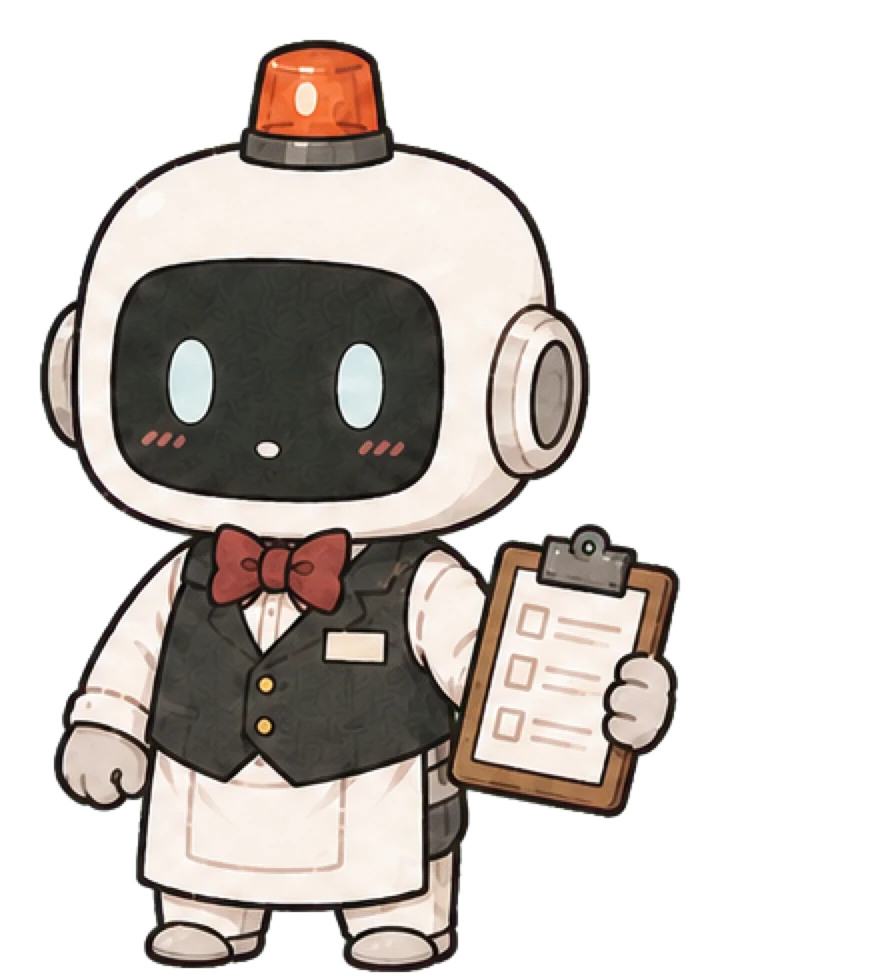

일상 기록
침대에서 일어남
집사가 기억한 순간
- 담당 집사
- 기록 당시 관계
- 보관 상태
ARCHIVE NOTE
이 기록은 작성 당시 담당 집사의 정보와 말투로 보존됩니다.
과잉집사 중앙인사국 공식 발령
처음에는 당신에게 별 관심이 없습니다. 하루 한 줄을 계속 남기면, 이 집사가 어떻게 달라지는지 보게 될 겁니다.

“감정이 없어야 하는데 주인님 일에는 자꾸 과열됨.”
※ 담당을 바꿔도 각 집사가 기억한 기록은 그대로 남습니다.
사용자 기록에만 예외 규칙이 조금씩 늘어나는 AI
한 줄이면 됩니다. 담당 집사가 오늘의 기록으로 기억합니다.
같은 기록도 괜찮습니다. 반복되는 하루까지 집사가 기억합니다.
금일 특이사항을 확인하고 있습니다.
작은 기록도 빠짐없이 반짝이게 보관해둘게요.
감정이 없어야 하는데 주인님 일에는 자꾸 과열됨
아직은 담당 업무라며 선을 긋고 있습니다.
숫자보다 집사의 행동을 지켜보세요.일반 업무 서류만 놓인 빈 책상입니다.
담당 기간이 이어지면 개인 물품 전달 절차가 열립니다.